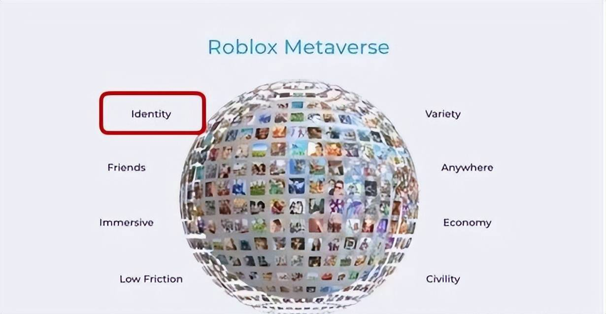

VOCALOID（日语：ボーカロイド，简称ボカロ），或写作Vocaloid，是日本樂器製造商山葉公司開發的電子音樂製作語音合成軟件，輸入音調和歌詞，就可以合成為原為人類聲音的歌聲。 2003年2月推出首個版本，2007年1月推出新版本VOCALOID 2。
2008年4月4日，发表并开发线上版“NetVOCALOID”，9月30日于“CEATEC JAPAN 2008”正式展示，该版本可于网页浏览器直接使用，由服务器计算合成声音，使得客户端电脑的工作负荷大大减低。于2009年4月9日正式公开，服务提供于部分手提电话。VOCALOID 3于2011年10月21日正式发售。时隔3年后VOCALOID 4于2014年11月20日正式公布，于2014年12月31日发售。2018年7月12日，VOCALOID5正式公布。
词源
开发者原来想将VOCALOID命名为“雏菊”（英语：Daisy）并参考了歌曲Daisy Bell，但由于版权问题，最终该软件被命名为VOCALOID。VOCALOID一词的来源有2种说法：
- 由英语单词“vocal（歌唱）”和词缀“oid（类似的，…状的）”构成，意思是“能唱歌的东西”。
- 由“vocal”和“Android（机器人）”组成，意思是“能唱歌的机器人”。
历史
Yamaha于2000年3月开始研发VOCALOID并宣布将于2003年3月5日至9日在德国的法兰克福国际乐器展览会公示其存在。2005年6月，Yamaha对VOCALOID更新至V1.1；此后进一步对其改进，版本更新至V1.1.2。使用第一代VOCALOID的虚拟歌姬共有5个。最初的系统只有装满处理算法的处理引擎，并无音色。
VOCALOID 2于2007年发布。与第一代引擎不同，VOCALOID 2基于其对声音样本的探测结果而非人声的分析。合成引擎和用户界面被彻底改造，日本的VOCALOIDs拥有自己独有的日本界面。VOCALOID 2系统的主要部分是乐谱编辑器（VOCALOID 2编辑器），歌手库和合成引擎。合成引擎从乐谱编辑器接收乐谱信息、从歌手库中选择适当的音色，并将它们融合在一起以输出合成音。Yamaha提供的乐谱编辑器和合成引擎在不同的VOCALOID 2产品中基本没有区别。
VOCALOID 3于2011年10月21日推出，一些工作室可以将VOCALOID 2的声乐库搬至VOCALOID 3。
2014年10月，首个使用VOCALOID 4的产品被确定为英语音源Ruby。此前发布被延迟，而这恰好让其可以用到全新的发声引擎VOCALOID 4。不久以后，克林普顿未来媒体对即将面世的“新Luka声乐”作出了报道。2015年，数个V4版的人声发布，此后不久VOCALOID 4发布。
特点
软件采用Yamaha开发的“Frequency-domain Singing Articulation Splicing and Shaping”。先采集人类声音的标本，然后再制作歌声数据库。但VOCALOID没有歌声数据库，实际可使用的版本由其他公司开发。
文化影响
在《初音未来 -歌姬计划-》游戏中，“初音未来”是开头动画的主角。
克里普敦未来媒体的初音未来Vocaloid 2软件发布后，VOCALOID开始在日本流行起来，她的成功导致了Vocaloid软件的普及，是VOCALOID成名的关键因素，她的代表作是甩葱歌。日本视频分享网站Niconico在软件的认可和普及中发挥了重要作用。克里普敦未来媒体称，他们知道在初音未来发布前，Niconico的用户便已开始以视频的形式发布用VOCALOID制作的歌曲，这些视频充分展现出了该引擎制作多媒体文件时可以展现出的各种可能，尤其是同人文化。随着其认可度和知名度的不断上升，Niconico成为了合作内容创建的地方，用户在这里将编写的原创流行歌曲与2D动画和3D动画以及其他用户的混音混合起来，许多创作者也可以在此展示一些未完成的作品并征求意见。该软件也被用于以歌曲和诗歌的形式讲故事，例如现已有1部漫画、6本书和2本剧本的作品恶之系列。NICONICO动画在推广Vocaloids方面发挥的重要作用也激起了人们对软件的兴趣，三浦建太郎也因为对网站的热爱而为他提供了免费服务。VOCALOID影响巨大，在线音乐分享平台SoundCloud和视频网站Youtube上相关音乐和视频的数量已达到了240万。
2009年9月，3个与初音未来密切相关的雕像被载上了美国内华达州黑岩石沙漠的火箭，但它没能抵达外层空间。2010年5月21日06:58:22（日本标准时间），日本首个金星探测器破晓号（日语：あかつき）在H-IIA运载火箭的帮助下从日本的种子岛宇宙中心发射，探测器内载有3个描绘初音未来的金属板。在2011年东日本大地震期间，人们生产了许多与Vocaloid有关的献血驱动器。
VOCALOID对大中华地区也产生了影响。在中国大陆，使用该软件的虚拟歌姬依旧是初音ミク最为出名，由黒うさP2011年9月17日投稿的单曲千本樱曾经席卷了整个ACG界，这首歌曲几乎都会在各大漫展上出现过，尤其是2011年9月后半旬至后三年这段歌曲红遍全球的黄金时间，几乎人人都在谈论此曲。2012年10月2及6日，初音ミク分别在香港和台湾举行“初音未来香港&台湾首次演唱会 “MIKUPA♪”。在那之后，初音未来2015上海演唱会（HATSUNE MIKU EXPO 2015 in SHANGHAI）于上海风云电竞馆召开，2017年，“MIKU WITH YOU · 未来有你·初音未来2017演唱会在北京和上海举行，这是初音未来在日本以外地区举办的第二场独立主题演唱会。2017年8月31日，初音未来 V4 CHINESE正式发售。
制品世代
VOCALOID 1
Yamaha于2000年3月起开始开发VOCALOID，并在2003年3月5日至9日的德国法兰克福乐器展上公开。最先公开的VOCALOIDLeon和Lola在2004年3月3日由Zero-G发布，以“虚拟灵魂歌手”为名义销售。Leon和Lola首次展出是在2004年1月15日的NAMM Show上。两者都被演示在连线杂志上，并赢得了2005年度电子音乐制作人选择奖。Zero-G随后在2004年7月发布了Miriam，其音源由Miriam Stockley提供。2004年末，Crypton Future Media也发布了其第一个VOCALOID产品MEIKO。2005年6月，Yamaha将软件引擎升级至1.1。Yamaha随后发布了一个补丁包使所有的VOCALOID软件都能升级至1.1.2，并为其添加了一些新的特色，尽管不同的软件升级后新增的功能不同。2004年至2006年间共有五个VOCALOID声库发布。VOCALOID在发布初期没有竞争对手，其英语版本也只需与随后发布的VirSyn公司的Cantor竞争。但是尽管有日文音源，由于软件缺少日文界面，即英文版和日文版的软件都是英文界面，唯一的不同是版本之间的LOGO和主界面色调。2011年，V1.1版本不再被Yamaha支持，并停止了更新。
VOCALOID 2
VOCALOID 2于2007年发布。由于时间因素，VOCALOID 2不像之前的版本那样，并没有公开进行beta版本的测试，软件的升级是由用户报告的问题而决定的。这个版本的合成引擎和UI(注)都是一次巨大的革新，日文版本的软件拥有专门的UI。VOCALOID 2实现了许多新的功能，例如note auditioning、transparent control track、 toggling between playback and rendering和expression control。而且可以将人的呼吸声和沙哑的声音录入音源库来制作更真实的声音。VOCALOID 2并不兼容之前的版本，之前版本的音源库也无法在这个版本中使用。除了PC软件，NetVocaloid服务也被公开。软件并没有被本地化，各个语言版本的软件只能拥有各自语言的音源，所以尽管巡音流歌拥有英文音源，但日文版的VOCALOID也只能加载其日文音源。VOCALOID一共有17个日文音源包和5个英语音源包，总共拥有35个音源。Yamaha在Y2 2010年秋季数字内容博览会上展示了VOCALOID 2在iPhone和iPad上的版本。随后，iPhone和iPad版的软件被发布，使用的音源是Yamaha自己的VY1音源。
VOCALOID 3
VOCALOID3在2011年10月21日被推出，一同推出的还有数个日语音源和首个韩语音源。Yamaha提供了一些V2的音源向V3升级的方式。V3也包括了一个名为Vocalistener(ぼかりす)的系统，能够自动测定并调整用户歌声的语音合成参数，来合成更自然的歌声。V3支持了更多的语言，包括汉语、韩语和西班牙语。V3同样支持使用自身的插件在标准和"classic"模式之间切换，后者生成的歌声不如前者真实。与之前的产品不同，V3的软件和音源是分开销售的。与VOCALOID3声库软件一同配布的VOCALOID编辑器仅为"Tiny"版本。Yamaha也为插件颁布授权，使V3能够在更多的平台上使用，例如视频游戏。另外，VOCALOID 3引擎支持三音位技术，相较Vocaloid 2提高了语言的适配性。V3的新的技术也被应用于重现已经在2007年逝世的歌手植木等的歌声，这是这类技术第一次被用来重现已经逝去的声音，在2004年软件推出之初它就已经被部分人考虑作为重现声音的一种可能，但2011年前都只是作为私人用途。
VOCALOID 4
2014年12月，VOCALOID4正式发售。V4和V3相比，有很多新的机能，比如音高变化曲线（pitch line），绝对音高模式（Pitch Snap Mode），还新增了GWL和XSY两大参数，使得编辑器的性能进一步提高。除此之外，用户还可以把自己的作品投到VOCALOID NET中。除了独立运行的VOCALOID4编辑器之外，同时还发布了运行在Cubase下的编辑器"VOCALOID Editor for Cubase"，实现了通过键盘设备实时输入音符的功能。 在V4初版发布之后，雅马哈也进行了数次更新，引入了更多实用功能，比如，快捷切换曾经用过的参数，快捷切换前景与背景参数，快捷运行JOB插件，批量抹除歌词等等，并且提升了程序运行的稳定性。
VOCALOID 5
2018年7月12日，VOCALOID5开始发售。比起以前的版本，V5拥有超过1000声的短语和超过1000的音频样本，超过100种歌唱风格预设，11种声音特效，支援VST使用，编辑器支援V3，V4旧版声库的使用。同时，工程文件格式由VSQX（V3/V4）变为VPR（V5），编辑器仍旧支持对VSQX的读取，但不再支持更早的VSQ格式。此版本同时由原有的12大参数，调整为13个参数。增加对Attack Effect和Release Effect的支持，增加对波形本身的调整功能，支持由MIDI乐器进行的即时输入，最大同时包含音轨轨道数32个，并取消了对Job Plugin任务插件的支持。Voicebank的部分则新增了4位声优，包含VY1 日文女人声以及VY2日文男人声、 CYBER SONGMAN II英文男人声、CYBER DIVA II英文女人声。